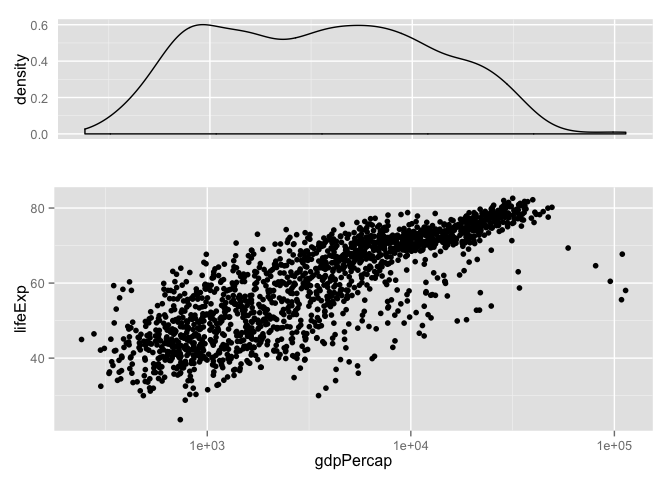

Multiple plots on a page
Facetting is not a panacea
Facetting is useful for constructing an array of similar plots where each panel corresponds to a level of a factor or a combination of levels from multiple factors. Pragmatic reshaping can make lots of graphing problems have this “look”. But this does not cover the entire spectrum of multi-plot needs in the real world. Sometimes you need to get more than one plot on a virtual page and the plots are rather disconnected. How do you do that?
Meet the gridExtra package
Under the hood, ggplot2 uses the grid package to create figures. The gridExtra packages provides some extra goodies and we will draw on them to place multiple ggplot2 plots on a single virtual page.
You may need to install gridExtra and you will certainly need to load it.
# install.packages("gridExtra")
library(gridExtra)
## Loading required package: gridLoad the Gapminder data and ggplot2
library(ggplot2)
gDat <- read.delim("gapminderDataFiveYear.tsv")
str(gDat)
## 'data.frame': 1704 obs. of 6 variables:
## $ country : Factor w/ 142 levels "Afghanistan",..: 1 1 1 1 1 1 1 1 1 1 ...
## $ year : int 1952 1957 1962 1967 1972 1977 1982 1987 1992 1997 ...
## $ pop : num 8425333 9240934 10267083 11537966 13079460 ...
## $ continent: Factor w/ 5 levels "Africa","Americas",..: 3 3 3 3 3 3 3 3 3 3 ...
## $ lifeExp : num 28.8 30.3 32 34 36.1 ...
## $ gdpPercap: num 779 821 853 836 740 ...Use the arrangeGrob() function
Store the constituent plots to plot objects and then pass them to arrangeGrob().
p_dens <- ggplot(gDat, aes(x = gdpPercap)) + geom_density() + scale_x_log10() +
theme(axis.text.x = element_blank(),
axis.ticks = element_blank(),
axis.title.x = element_blank())
p_scatter <- ggplot(gDat, aes(x = gdpPercap, y = lifeExp)) +
geom_point() + scale_x_log10()
p_both <- arrangeGrob(
p_dens, p_scatter, nrow = 2, heights = c(0.35, 0.65))
p_both
You can find many examples of arrangeGrob() usage in the R Graph Catalog.
Use the multiplot() function
In his Cookbook for R, Winston Chang uses the grid package to define the multiplot() function:
# Multiple plot function
#
# ggplot objects can be passed in ..., or to plotlist (as a list of ggplot objects)
# - cols: Number of columns in layout
# - layout: A matrix specifying the layout. If present, 'cols' is ignored.
#
# If the layout is something like matrix(c(1,2,3,3), nrow=2, byrow=TRUE),
# then plot 1 will go in the upper left, 2 will go in the upper right, and
# 3 will go all the way across the bottom.
#
multiplot <- function(..., plotlist=NULL, file, cols=1, layout=NULL) {
require(grid)
# Make a list from the ... arguments and plotlist
plots <- c(list(...), plotlist)
numPlots = length(plots)
# If layout is NULL, then use 'cols' to determine layout
if (is.null(layout)) {
# Make the panel
# ncol: Number of columns of plots
# nrow: Number of rows needed, calculated from # of cols
layout <- matrix(seq(1, cols * ceiling(numPlots/cols)),
ncol = cols, nrow = ceiling(numPlots/cols))
}
if (numPlots==1) {
print(plots[[1]])
} else {
# Set up the page
grid.newpage()
pushViewport(viewport(layout = grid.layout(nrow(layout), ncol(layout))))
# Make each plot, in the correct location
for (i in 1:numPlots) {
# Get the i,j matrix positions of the regions that contain this subplot
matchidx <- as.data.frame(which(layout == i, arr.ind = TRUE))
print(plots[[i]], vp = viewport(layout.pos.row = matchidx$row,
layout.pos.col = matchidx$col))
}
}
}Assuming that the plot objects p1, p2, p3, and p4 are pre-defined, call the function like this:
multiplot(p1, p2, p3, p4, cols = 2)Visit Multiple graphs on one page (ggplot2) to see a complete worked example.